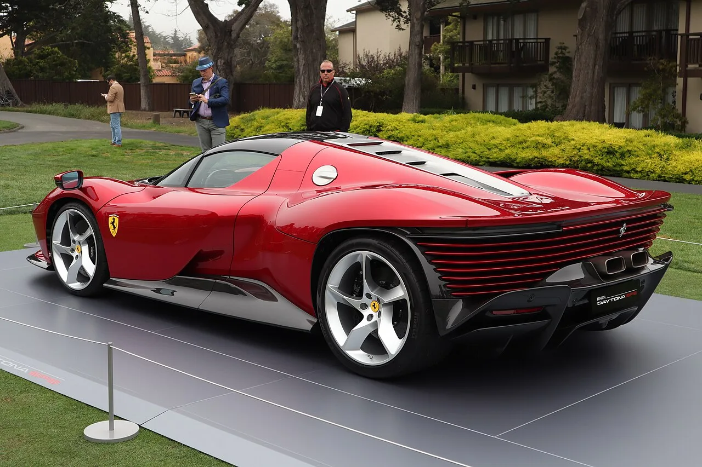
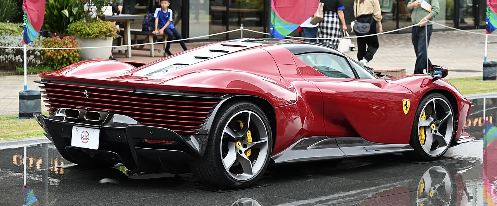
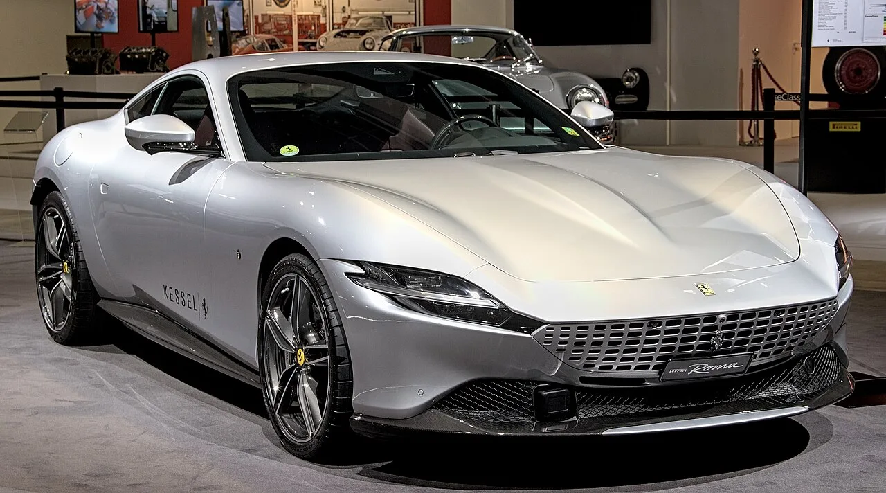

▲ 페라리 데이토나 SP3. 2025년 2,600만 달러로 페라리 경매 최고가였으나 이번에 경신됐다
페라리의 첫 순수전기차 루체(Luce)의 생산 1호차가 경매에 나왔습니다. 추정가는 110만 달러였습니다.
낙찰가는 4,000만 달러였습니다. 원화로 약 590억 원, 추정가의 36배입니다.
그리고 이 돈은 페라리의 매출로 잡히지 않습니다. 전액 기부됩니다.
1. 110만 달러 → 4,000만 달러
숫자부터 정리하겠습니다.
| 항목 | 금액 |
|---|---|
| 사전 추정가 | 110만 달러 |
| 낙찰가 | 4,000만 달러 (약 590억 원) |
| 추정가 대비 | 36배 |
| 루체 기본가(약) | 55만 유로 (약 64만 달러) |
| 기본가 대비 | 약 62배 |
| 페라리 종전 기록 | 2,600만 달러 (데이토나 SP3, 2025년 8월) |
경매에서 낙찰가가 추정가를 웃도는 일은 흔합니다. 하지만 36배는 정상 범주를 한참 벗어난 수치입니다.
더 눈에 띄는 것은 페라리 종전 경매 기록을 1,400만 달러 차이로 넘어섰다는 점입니다. 데이토나 SP3가 2025년 8월 세운 2,600만 달러가 직전 기록이었습니다.
2. 값을 만든 것은 성능이 아니라 번호
이 차가 특별한 이유는 출력이나 주행거리가 아닙니다. 번호입니다.
차대번호 ZFF21BUA8T0338000, 통칭 '섀시 0'. 루체 프로그램의 생산 1호차입니다.
컬렉터 시장에서 1호차 프리미엄은 오래된 규칙입니다. 같은 모델이라도 첫 번째로 만들어진 개체는 별도의 가치를 갖습니다. 특히 브랜드의 방향을 바꾸는 모델일수록 그 프리미엄이 커집니다.
루체는 페라리 78년 역사상 첫 순수전기차입니다. 내연기관으로 정체성을 쌓아온 브랜드가 처음 내놓은 전기차의 1호차라는 상징성이, 4,000만 달러라는 숫자의 근거입니다.
한 독자의 반응이 이 지점을 정확히 짚었습니다.
"페라리의 첫 BEV. 한 시대의 끝이자 시작."

▲ 데이토나 SP3의 2,600만 달러 기록을 루체 1호차가 1,400만 달러 차이로 넘어섰다
3. 사양 — 세상에 하나뿐인 도장
이 차는 테일러 메이드 프로그램으로 제작된 원오프 사양입니다.
도장은 '마드레페를라 세미글로스(Madreperla Semi-Gloss)'입니다. 보는 각도에 따라 녹색에서 보라색으로 변하는 색입니다. 이 차를 위해 만들어진 색으로, 다른 개체에는 쓰이지 않습니다.
실내는 페를라 컬러의 르망 메탈릭 가죽에 그리조 코르바라 포인트를 넣었습니다. 휠과 캘리퍼도 전용 사양입니다.
인도는 바로 이뤄지지 않습니다. 마라넬로에서 최종 조립을 마친 뒤 2027년 1분기에 넘겨집니다. 낙찰자는 1년 넘게 기다려야 합니다.
4. 이 돈은 페라리로 가지 않는다
가장 중요한 대목입니다. 낙찰액 4,000만 달러는 전액 페라리 재단에 기부됩니다.
페라리 재단은 미국 501(c)(3) 비영리 단체로, 교육 프로그램에 자금을 지원합니다. 경매사인 RM 소더비도 구매자 수수료를 면제했습니다.
이 구조가 왜 중요하냐면, 4,000만 달러를 페라리 루체의 시장 가치로 읽으면 오독이기 때문입니다.
자선 경매에서는 낙찰가가 차의 가치보다 기부 의사를 반영합니다. 세제 혜택도 작용합니다. 실제로 자선 경매 낙찰가는 일반 경매보다 훨씬 높게 형성되는 것이 보통입니다.
루체의 실제 시장가를 알려면 일반 매물이 나올 때까지 기다려야 합니다. 기본가가 55만 유로 수준이니, 초기 프리미엄이 붙어도 4,000만 달러와는 자릿수가 다를 것입니다.

▲ 자선 경매 낙찰가는 차의 시장 가치가 아니라 기부 의사를 반영한다
5. 페라리가 전기차로 넘어가는 방식
이 경매에는 페라리의 계산이 읽힙니다.
내연기관으로 정체성을 쌓아온 브랜드에게 첫 전기차는 위험한 카드입니다. 기존 고객이 등을 돌릴 수 있고, "페라리답지 않다"는 반응이 나오기 쉽습니다.
실제로 최근 페라리의 원오프 모델 CZ26은 공개 직후 "기아 같다"는 반응이 나오기도 했습니다.
그런데 1호차를 자선 경매에 내놓고 브랜드 역사상 최고가가 나오면, 그 자체가 강력한 메시지가 됩니다. "전기차여도 페라리는 페라리"라는 것을 시장이 인증한 모양새가 되기 때문입니다.
전액 기부라는 형식도 계산의 일부로 보입니다. 상업적 이익을 취하지 않으면서 기록과 화제성만 가져가는 구조입니다.

▲ 내연기관으로 정체성을 쌓아온 브랜드에게 첫 전기차는 다루기 까다로운 카드다
6. 정리
페라리 첫 순수전기차 루체의 생산 1호차(섀시 0)가 RM 소더비 몬터레이 경매에서 4,000만 달러에 낙찰됐습니다. 추정가 110만 달러의 36배, 정가의 약 62배입니다.
페라리 종전 경매 기록인 데이토나 SP3(2,600만 달러)를 크게 넘어섰습니다. 원오프 도장과 전용 실내가 적용됐고 인도는 2027년 1분기입니다.
다만 이 숫자를 루체의 시장 가치로 읽으면 안 됩니다. 낙찰액 전액이 페라리 재단에 기부되는 자선 경매이고, 경매사도 수수료를 면제했습니다. 값을 만든 것은 성능이 아니라 "첫 번째"라는 번호입니다.